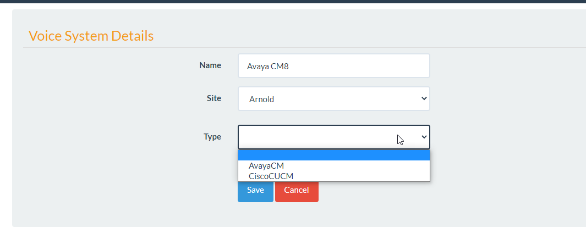
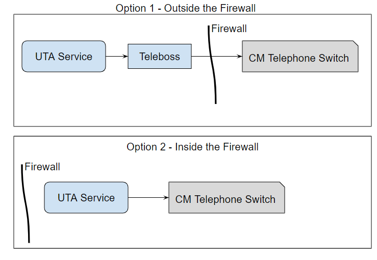

Voice Systems¶
Introduction¶
Voice Systems refer to the onsite Telephone Switch. Voice Systems in UTA are where we configure Traffic data collection.
As of 1.0.7.1 there are 2 supported Voice Systems for the collection and reporting of Traffic data, the Avaya CM and the Cisco CUCM.
They both work a little different when collecting traffic information.
Avaya CM¶
UTA has worked with CM4 all the way through the CM8 to collect traffic information. When configuring a CM system select the AvayaCM as the Voice System Type.

This will provide you with different traffic collection options.
The Avaya CM Switch generates Traffic reports. These traffic reports are collected and parsed by UTA. The parsed and aggregated versions of these reports is what users will report on.
UTA collects these reports via SSH. The UTA Service that runs in the background will issue commands to the CM over SSH or Telnet and the CM responds to these commands with traffic reports.
Note
There are two ways to collect the Traffic reports from the CM. 1: Directly from the switch, 2: go through a Teleboss.
Depending on how the network is setup you may be able to go directly from the UTA Service to the CM. In other cases this is prevented by Onsite firewalls.
To go directly from the UTA Service to the CM simply leave the Teleboss Host Name or IP empty.
If you are pulling the reports through the Teleboss you will need BOTH Switch and Teleboss information.
The Teleboss acts as a “proxy”. The UTA Service will issue a command “through” the proxy thus both the Teleoboss and Switch information is required.